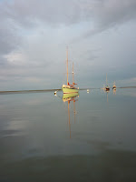
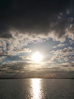
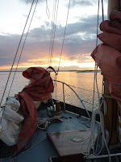
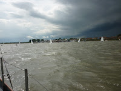
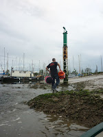

"The mouth of the River Blackwater stretched wide and blue ahead her. Meresig shone glassily to port and to starboard the long flat line of the St Peters peninsula curved away into haze."
 |
| Peter Duck in Tollesbury Fleet |
{kind=link}
We were trudging through the RYA Yachtmaster syllabus in a Harlow adult education building. Two and a half hours every Wednesday evening through the long dark winter. Our instructor was short and paunchy with a beard that would have qualified him for chief of all the dwarfs of Narnia. He was garrulous and eccentric, self-deprecating, knowledgeable, experienced and kind. If any of us had a problem with our boats George would be down in his van to help or he'd ship along on a tricky passage keeping crew morale high with his vast stock of Flanders and Swan songs. As soon as the RYA course had ended George would be setting off single-handed for the Azores in some converted cockleshell that he’d knocked up on the local canal.
{kind=link}

This was the evening of the meteorology module. George was embellishing the facts of the ionosphere and the stratosphere with actual observed phenomena. His account of a mirage shimmering above the River Blackwater reminded me of something I'd seen on that same river. Light and air and water -- the sailor's ever-changing world. That vision stayed in my mind when all the diagrams were gone. It was probably ten years ago.My heroine, Xanthe sees a mirage. Hers is a full-blown “Fata Morgana” where objects don’t just lift and hover, they invert and transform and fly. It's named for the enigmatic Morgan-le-Fay, King Arthur's troubled half-sister in Malory's Morte D'Arthur. I've allowed myself fragments of an Arthurian sub-text throughout this story. They're mainly for private pleasure, not essential -- though if anyone were to recall Malory's account of Arthur's mother, Igraine and the sleazy circumstances of the king's conception they'll have no difficulty guessing a major element of the plot. Xanthe’s feelings as she watches an unknown sailing boat rise and shimmer and vanish into the distant heat haze are remembered from George's description and my own more ‘normal’ mirage. Though is there ever anything quite ‘normal’ when one is alone very early in a summer’s morning on a river?
(All the photos in this blog were taken in a 24 hour period on the Blackwater and the Colne but I seem to have omitted the blue, calm and sparkly ones.)
 |
| Evening in the Pyefleet |
{kind=link}
 |
| Laser dinghies racing off Heybridge |
{kind=link}
I couldn't quite bear to do that to Xanthe so I knocked her “out of her know” (in the poet John Clare's memorable phrase). I took her away from her home and her family and tipped her into situations where her confidence deserted her and her optimism was challenged. A disaster on the South Coast at Weymouth forces her into exile among the saltings of Flinthammock, a thinly disguised Tollesbury, adjacent to the Blackwater. In literary terms this brings her close to Allingham-land.. My real-life heroine detective novelist Margery Allingham began her writing career on Mersea Island (Meresig) and "Flinthammock" features strongly in her world war two autobiography, The Oaken Heart. Rev Sabine Baring Gould wrote Mehalah on Mersea Island and the Old Hall marshes behing Tollesbury provide the habitat for J A Baker's extraordinary book The Peregrine.
The change of location also knocked me out of my writerly know – away from the Suffolk rivers which I know with the unthinking knowledge of early childhood and into the complex and ensnaring Essex marshes. Black Waters seems to me to have become a different sort of book: more complicated, more 'researched', with a yearning away from adventure and towards detection that I can only attribute to the Allingham influence. I feel less certain than ever about who, apart from myself, it is written 'for'. I am very glad I wrote it. I am equally glad it's done. Now perhaps I should sign myself up for a photography course!
{kind=link}
 |
| Getting ashore at Tollesbury |
{kind=link}
Black Waters is illustrated by Claudia Myatt and is available as an ebook or a paperback.